Stillvaro · A quiet practice for π
The art of
chunking π.
4 Digits at a time.
Give four digits a shape. Follow the dial, try them from memory, and connect them into a longer sequence. Take a little time. Keep your place.
iPhone, iPhone Duo & iPad · iOS / iPadOS 26 or later
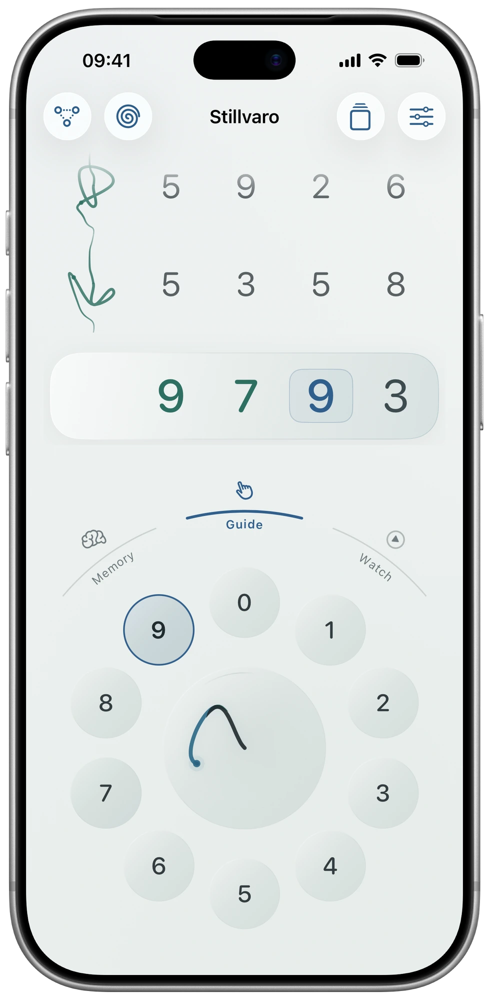
Figure 1: Guide · Follow the next digit. Preview.

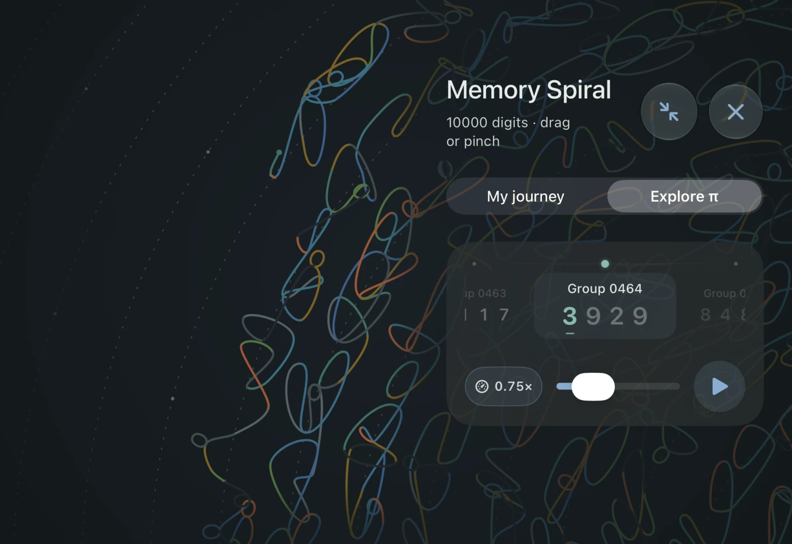
Figure 2: iPhone Duo · Explore π in the Memory Spiral. Preview.

A familiar practice. More room to explore.
The latest Stillvaro 2.1 preview brings a continuous Explorer, dated memory milestones, and refined layouts for iPhone, iPhone Duo, and iPad. Begin with a shape of four digits, then connect it into passages of eight and sixteen. Guide, Memory, Watch, and the Memory Spiral remain at its heart.
One continuous Explorer
Swipe through shapes and their connections. Press Play, change the pace, and see the evidence behind your recall.
A moment to keep
Every new sixteen digits in an uninterrupted memory-test best earns a dated milestone. Revisit it in Explorer.
Room for your practice
Move between Practice, Explore π, Spiral, and Your memory. Keep your place as the display or window changes.
A look at Stillvaro 2.1.0. These previews may differ from the version currently available in the App Store.
Every shape. Every connection.
Swipe through one continuous journey in Explore π. Shapes and digit cards move together; Play draws each coloured stroke and connecting join. Adjust the pace without stopping. Tap a shape or connection for its recall evidence, then choose Practise from here.
On the expanded iPhone Duo display, the selected shape stays clear while the drawing continues behind translucent controls. The Memory Spiral also fills the available canvas. Translucent circles and join symbols show recorded recall; a separate clock marks a due review. Browsing and playback do not count as recall.
During practice, the dial and sequence stay on opposite sides of the hinge. Choose a left or right dial in Settings → Layout → Dial position. Your place and entered digits stay saved as the layout changes.
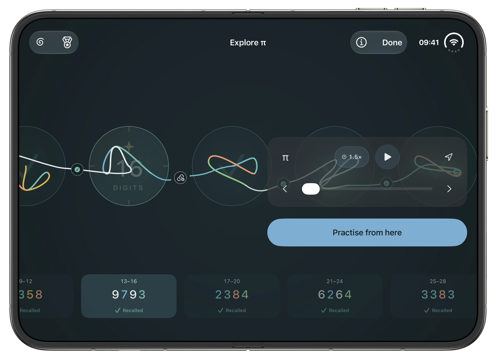
Figure 3: Duo expanded display · The continuous Explorer, with shapes, connections, and floating controls. Preview.

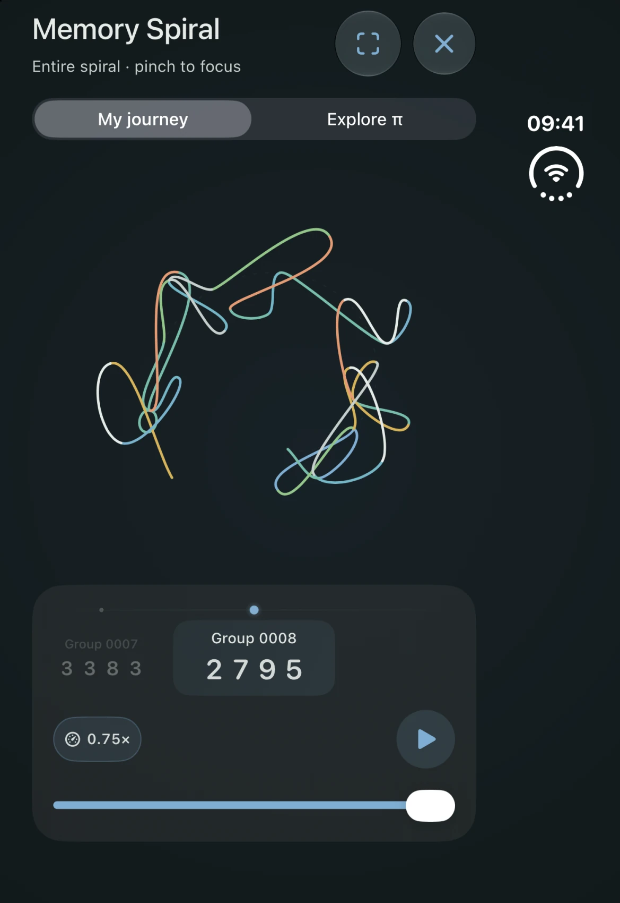
Figure 4: Duo outer display · Your journey in the Memory Spiral. Preview.

Sixteen more. A moment to keep.
16. 32. 48. A record of how far you have come.
Reach a new uninterrupted personal best from the beginning of π in a manual memory test. Every new sixteen digits earns a badge, with a quiet celebration in the orb and optional haptic taps.
Open the medal beside Spiral to see your milestone board. Each badge keeps its earned date; select one to find its place in Explorer. Earlier qualifying tests count too, and later mistakes do not remove an achievement.
Prefer a quieter practice? Turn off Milestone badges in Settings or the introduction. Your results and achievements stay saved.
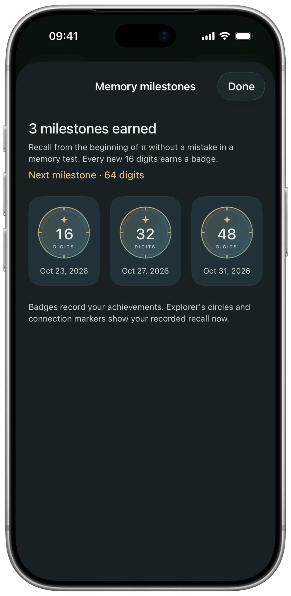
Figure 5: Memory milestones · A dated board of 16-, 32-, and 48-digit achievements. Example records. Preview.

A little more space for your next four.
Move between Practice, Explore π, Spiral, and Your memory in one native iPad workspace. Portrait keeps the sequence above the dial; landscape lets them sit beside each other. Narrow windows use a destination menu.
The latest portrait layout balances the dial, mode controls, and entry panel. Choose the dial side in Settings, or resize the window beside your other work. Your practice place and entered digits stay saved.
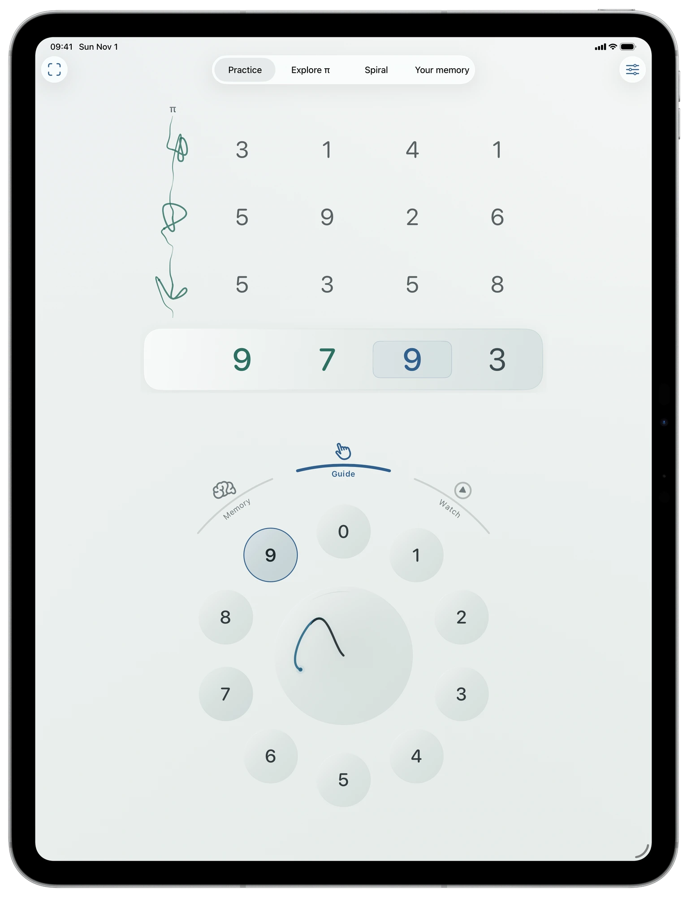
Figure 6: iPad · The native portrait workspace, with the sequence above the dial. Preview.

Your memory, at a glance.
The latest overview begins with three useful records: Digits practised, Best test · digits, and Groups to revisit. A map gives each group of four its own tile. Tap one to open its details; use View all to find a group by digit position.
Across days and Connected mark recorded recall. Revisit highlights a join or review that needs another look; Learning marks groups without connected recall yet. These are records of practice, not a promise about what you will remember next time.
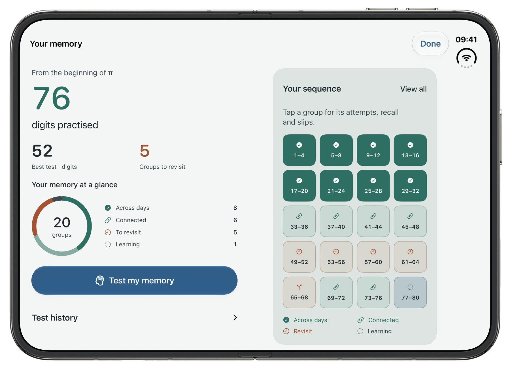
Figure 7: Your memory on Duo · Practice records and the sequence map, side by side. Preview.

Look a little closer.
Group details brings saved comparisons, current recall counts, and the positions of slips together. Recorded practice lets you compare another section. The history stays available when you want detail.
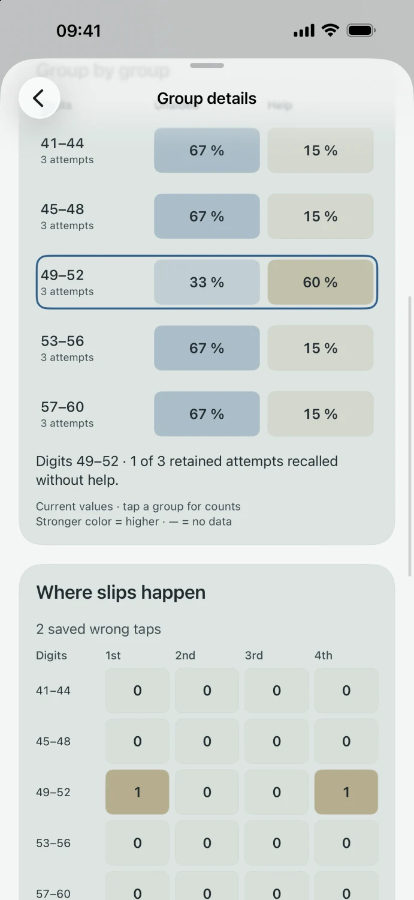
Figure 8: Group details · Compare retained attempts and see where slips happen. Preview.

Pause when you need to. Return when you’re ready.
After repeated unsuccessful attempts at a connection, A moment to reset offers Continue practice or Pause for now. A single wrong tap does not interrupt an unfinished entry.
Pausing keeps the same place and the connections that still need work. Resume practice brings you back there. Short retries remain in your history without repeatedly reducing the review spacing within the same repair window.
There is more than one way to practise.
Watch a shape, explore a new passage, test your recall, or take a pause. Open any app capture for a larger view.
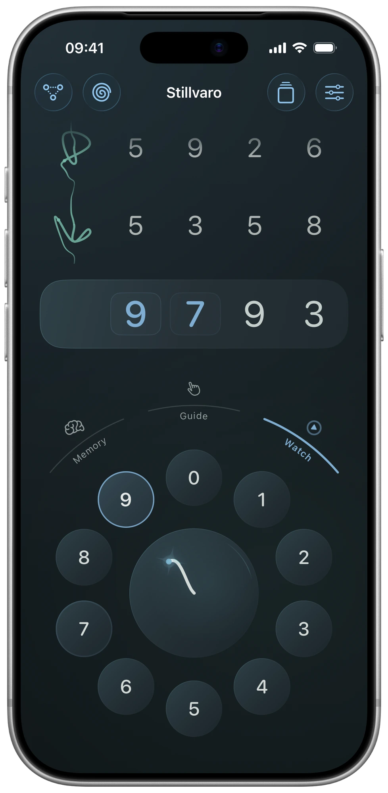
Figure 9: Watch · Choose a pace and follow the shape. Preview.

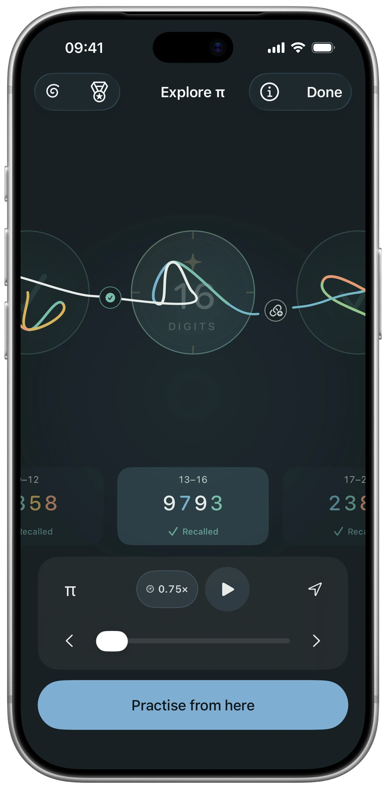
Figure 10: Explore π on iPhone · Swipe through shapes and tap for recall evidence. Preview.

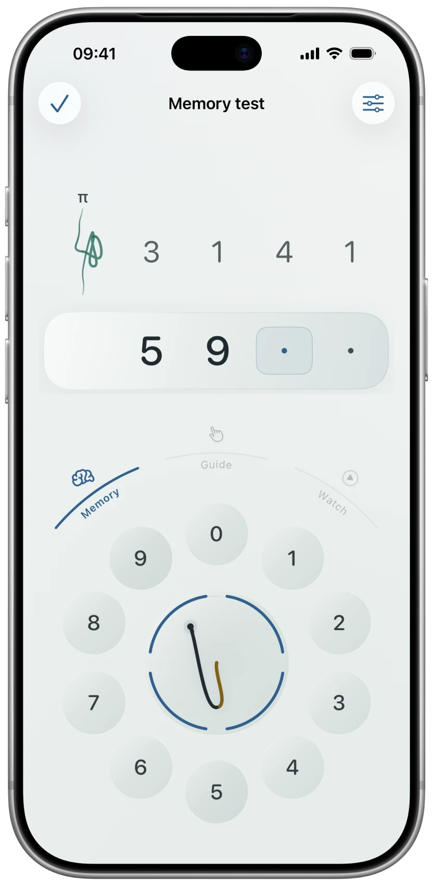
Figure 11: Test my memory · An untimed test with four attempts per group. Preview.

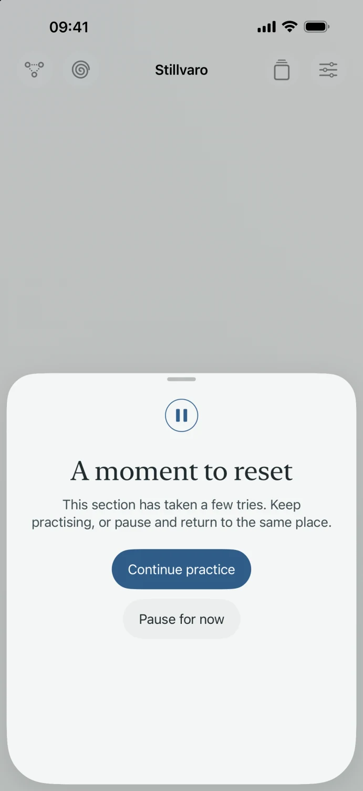
Figure 12: A moment to reset · Continue now or save the difficult connection for later.

Screen images show the app with example practice records. Preview features may differ from your installed version.
Start small. Find your rhythm.
Begin with 3141: π’s leading 3 and its next three digits, without the decimal point. In Guide, follow the highlighted digit. Tap the dial, or drag onto a digit and pause. Then try the group in Memory.
How to practise
Gestures, Explorer, milestones, connected practice, pauses, tests, and device layouts.
Understand your history
What recall symbols, milestones, recorded values, review dates, and test scores mean.
Get in touch
Email support@mholson.com with your app version, device, OS version, and what happened. Practice history is not attached automatically.
Your practice stays with you.
Practice, reviews, and tests work offline. Stillvaro needs no account and has no advertising, third-party analytics, subscriptions, or in-app purchases. Your local history and milestones stay on your device, where they help you revisit achievements, continue practice, and choose reviews.
Progress saves on each device. There is no automatic device-to-device sync or progress importer. A local recovery copy can help with a damaged save; device backups depend on your settings.
A few practical details.
Do I need to know any digits of π?
No. Guide starts with 3141 and shows the next digit. There is no countdown.
Does my progress move between my iPhone and iPad?
Each device keeps its own local practice. There is no automatic sync between devices or progress import. Device backups are managed through your device settings.
What does a memory-test score mean?
Uninterrupted recall counts complete groups before the first mistake. A successful retry lets you continue, but does not extend that uninterrupted score. Tests preserve your practice place and reviews.
Can I turn milestone celebrations off?
Yes. Turn off Milestone badges in Settings or the introduction. Your test results and earned achievements stay saved. Reduce Motion provides a still badge, and haptics are optional.
What about accessibility?
Stillvaro supports VoiceOver and larger text, and follows contrast, transparency, and motion preferences. Compact windows and accessibility text place more controls in Practice options.